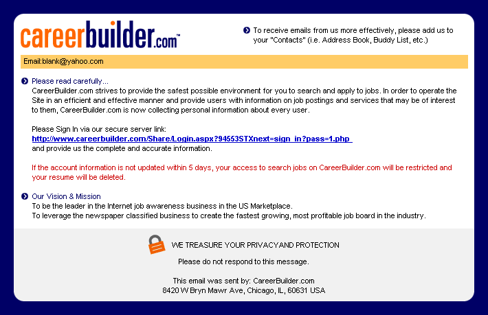

Privacy Statement
Protect Your Privacy and Safety
CareerBuilder, LLC and its subsidiaries and divisions (collectively, “CareerBuilder”, “We” or “Our”) has drafted its Privacy Policy to ensure that you can use CareerBuilder’s sites on your own terms and completely anonymously if you so desire. CareerBuilder continues to strive to provide the safest possible environment for you to search for and apply to jobs.
CareerBuilder Precautions
Overview
We have created this Privacy Policy to demonstrate our commitment to protecting information you submit. This Privacy Policy only applies to data gathered on any web site under CareerBuilder’s control (collectively, the “Sites”), and does not apply to any other information or web site. Please review this Privacy Policy periodically as we may update it from time to time. This Privacy Policy is effective as of March 1, 2010. Each time you visit the Sites or provide us with information, you are, by doing so, accepting the practices described in this Privacy Policy at that time. You agree that by using the Sites you are expressly and affirmatively consenting to our use and disclosure of the information that you provide, and consenting to receive emails, as described below.
Personal Information
In order to operate the Sites in an efficient and effective manner and provide users with information on job postings and services that may be of interest to them, CareerBuilder may collect personal information, including contact information (such as an email address), from its users. In addition, this information allows us to provide users with private and secure areas to post and modify their original content on our Sites (e.g., jobs and resumes). We also automatically track certain information based upon your behavior on the Sites and use this information to do internal research on our users’ demographics, interests, and behavior to better understand, protect and serve users in general. This information may include the URL that a user has just come from (whether this URL is on our Sites or not), the URL a user goes to next (whether this URL is on our Sites or not), a user’s computer browser information, and their IP address.
You agree that CareerBuilder may use your personal information to contact you and deliver information to you that, in some cases, is targeted to your interests (such as relevant job postings, services, educational or other career development opportunities), or provides administrative notices or communications applicable to your use of the Sites. By accepting this Privacy Policy, you expressly agree to receive this information. If you do not wish to receive these communications, we encourage you to opt out of any further receipt by following the opt out provisions provided in each such communication. CareerBuilder may also aggregate certain non-personally identifiable information about its users (such as occupation, location, education and experience) and use such anonymous information to prepare reports that it provides to its users.
We do not sell our users’ contact information to anyone for any reason if the user has indicated a desire for us to keep the information private. When posting jobs and resumes, our users decide for themselves how much contact information they wish to display (we enable private communication for those who choose to hide this information).
All users should be aware, however, that when they voluntarily display or distribute personal information (such as their email address or resume), that information can be collected and used by others. This may result in unsolicited messages from third parties for which CareerBuilder is not responsible. Also, you may have arrived at the Sites by following a link from a CareerBuilder newspaper affiliate or other affiliate. If so, please be aware that CareerBuilder may share your information with that affiliate and the affiliate may use the information consistent with its privacy policy instead of this one.
CareerBuilder may also disclose specific user information when we determine that such disclosure is necessary to comply with the law, to cooperate with or seek assistance from law enforcement or to protect the interests or safety of CareerBuilder or other users of the Sites. In addition, personal information we have collected may be passed on to a third party in the event of a transfer of ownership or assets or a bankruptcy of CareerBuilder.
Credit Card Security
CareerBuilder employs encryption for secure credit card transactions.
About Cookies and Third Party Advertisers
At CareerBuilder, we use cookies only for the protection and convenience of our users. Cookies enable us to serve secure pages to our users without asking them to sign in repeatedly. If a user’s system is idle for more than an hour, however, the cookie will expire, forcing the user to sign in again to continue their session. This prevents unauthorized access to the user’s information while they are away from their computer. You may have the ability to reset your browser to refuse all cookies or to indicate when a cookie is being sent; however, some CareerBuilder features or services may not function properly without cookies.
Third-Party Advertisers: We use third-party advertising companies to serve ads when you visit the Sites. These companies may use information (not including your name, address, email address or telephone number) about your visits to these and other web sites in order to provide advertisements about goods and services of interest to you. If you would like more information about this practice and to know your choices about not having this information used by these companies, click here.
Safe Harbor
CareerBuilder has certified its adherence to the U.S. Department of Commerce’s Safe Harbor Principles in connection with the U.S. implementation of the European Union Data Protection Directive. For more information about the Safe Harbor Privacy Principles and to view the certification for CareerBuilder, visit the U.S. Department of Commerce’s Safe Harbor web site. You may also contact us directly at (866) 438-1485 to learn more about this certification. In addition, CareerBuilder is a member of the BBBOnLine U.S./E.U. Safe Harbor Dispute Resolution program. Please consult the BBBOnLine website at www.bbbonline.org for more information concerning the BBBOnLine privacy programs and dispute resolution procedures.
What You Should Know
CareerBuilder cannot ensure that all of your private communications and other personal information will never be disclosed in ways not otherwise described in this Privacy Policy. Therefore, although we are committed to protecting your privacy, we do not promise, and you should not expect, that your personal information or private communications will always remain private. As a user of the Sites, you understand and agree that you assume all responsibility and risk for your use of the Sites, the internet generally, and the documents you post or access and for your conduct on and off the Sites.
Protect Yourself
Some Important Tips To Use When Dealing With Prospective Employers
- Never give our your social security number to a prospective employer.
- Never provide credit card or bank numbers or monetary transaction of any sort.
- Be cautious when dealing with contacts outside of your own country.
- Do not provide any non-work related personal information (i.e. social security number, eye color, marital status, etc.) over the phone or online.
Other Privacy Features On the Sites
You never need to provide data to search for jobs. Logging into the Sites is always an optional task for you to take, (although logging in does give you access to smarter job search tools such as my careerbuilder, Personal Search Agents and Saved Searches.)
Post a Resume
Posting your resume on the Sites puts you in front of thousands of employers with open positions each day. When you post your resume, we automatically create a registration for you using the email address and password that you supply. When you return to the Sites in the future you will use that same email address and password to access and edit your existing resume.
Resume Privacy Options
We know that our job seekers have varying levels of comfort when it comes to posting their resume on the Internet. To accommodate the needs of all users, CareerBuilder has 3 levels of privacy from which you can choose.
-
Standard Posting
This option gives you the most visibility to the broadest employer audience possible by making your resume searchable in our Resume Database.
-
Anonymous Posting
You can also post to the public resume database without any of your contact information being displayed. (If you use this option be sure to remove your contact information from the body of the resume.) The anonymous option also allows you to only display selected pieces of contact information.
-
Private Posting For Apply Online Only
This option allows you to post your resume on the Sites without having it searched by employers. The benefit is that you can quickly and easily apply for jobs without retyping your information.
Your General Contact Information
Managing your privacy is as simple as selecting which pieces of your contact information are displayed. This is done in the section of the resume form called “Contact Information.” Using option 3 above requires that you select the Apply Online Only option from the “Contact Information” section at the bottom of the edit form, as shown below.
Microsoft Windows Live™ ID
In addition to the CareerBuilder sign-in, CareerBuilder offers the ability to sign in using Microsoft Windows Live ID service, which provides authentication for online sign in. When you sign in to this site using the Windows Live ID service you will be asked to provide your e-mail address and a password to sign you in. This same Windows Live ID sign-in allows you to access many other participating Windows Live ID web sites.
View the Windows Live ID Privacy Policy >>
How To Spot Fraud
Email and Online Fraud
Unfortunately, email and online fraud are continuing concerns for virtually all businesses that operate on the Internet. Please be aware that, from time to time, fraudulent emails have been circulated to CareerBuilder users that appear to be from CareerBuilder but which are, in fact, sent by imposters. CareerBuilder is not sending these fraudulent emails. If you receive an email or pop-up window requesting that you sign in to CareerBuilder and provide your personal information, do not respond.
This is an example of one such fraudulent email:

Help Us Monitor Fraud
Please be advised that CareerBuilder will never initiate a request for your personal information via email or pop-up window. If you ever receive a request for this type of sensitive information, please do not respond and immediately contact CareerBuilder customer service at (866) 438-1485 or report the suspected fraud using our feedback form.
If you think you have been a victim of fraud, immediately report the committed fraud to your local police and contact us using our feedback form so steps can be taken for your safety.